Sixteen beats rendered overnight on the rtx5090 with the goblin and the guards frozen to one description, then re-rendered where a fault could be named and attributed. Four seeds per round. Each beat below shows the first generation, the fix generation under it, and one line on whether the named fault actually cleared. Click any sheet for full size.
The two frozen identities are provisional and yours to veto this morning. They were written by the steward under your 01:5x delegation — “clothing - whatever, guards - whatever … things that aren't in the script you can decide” — against a laptop about 35 minutes from dying, and every round on this page was rendered against them:
What the shot should show A two-leaf sapling alone in a green field, and on the thinnest branch a green nub swelling into a single fig — the fig growing on screen is the only thing in frame that moves.
The prediction, written before the render (commit 043e376c) “The plate's style was never carried by words … This round starts from s2 and the plate is nowhere in it, so the only channel that could move style toward the plate family is the same text channel already measured to lose. I therefore expect a clean sweep of ‘still not the plate look’ and no middle.”
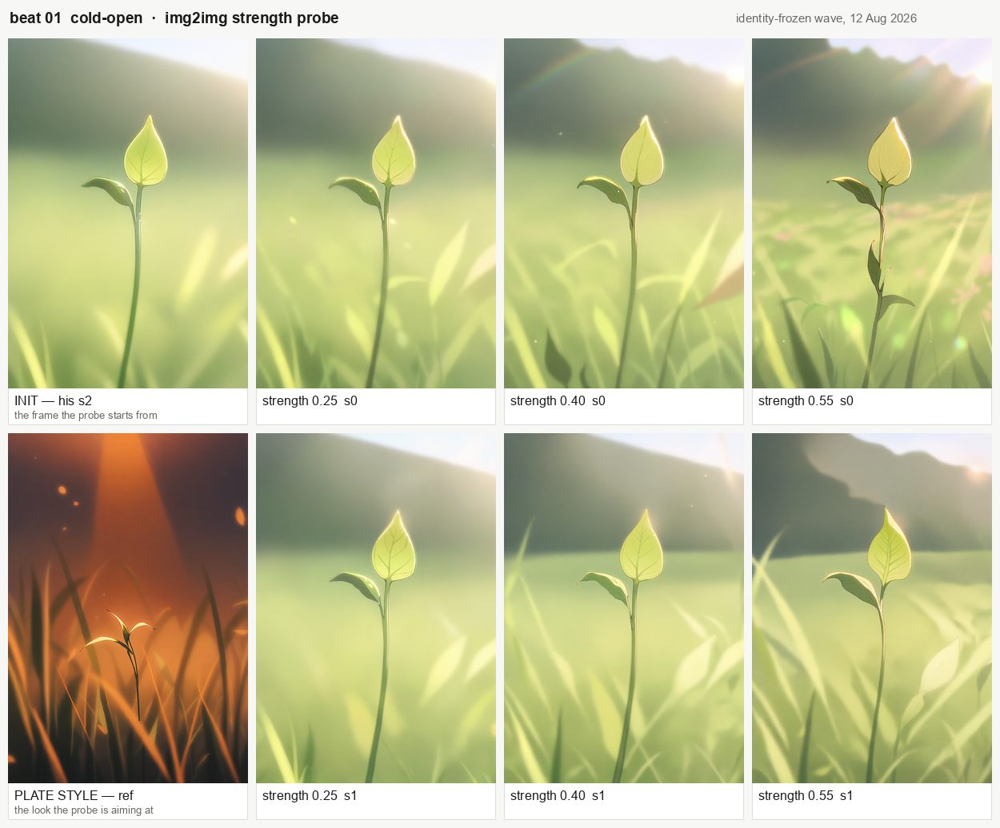
Observed All six arms keep the init's composition and its soft green daylight, and none of them moves toward the plate reference's dark warm backlight — at 0.55 what changes is a redrawn background hill and a reshaped leaf, not the style. Separately, and against the prediction's own wording: the object at the top of the stem is a veined leaf in the init and a veined leaf in all six arms, so there is no fig anywhere in this probe.
animagine-xl-3.1 img2img · 832×1216 · 40 steps · guidance 7.5 · seeds 20260720 / 20261720 · $0.00 · init farm-out/ep2-b01-t2i-fig/01-cold-open-wave1-s2.png, plate ref farm-out/ep2-b01-brightbase-figmatte/ · sheet rebuildable with review/ep2-picks/build_styleprobe_sheet.py
What the shot should show The scavenger skidding in and diving behind the sapling — wide enough that the dive reads, and the sapling actually in frame.
The fixer's diagnosis, committed last night “Every frame sews the cloak's patchwork INTO THE CHARACTER … The bald head he ruled for is present, but it arrives as Frankenstein surgery.” And: “No frame puts a stem between the camera and the goblin.”
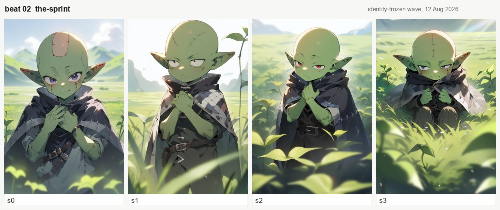
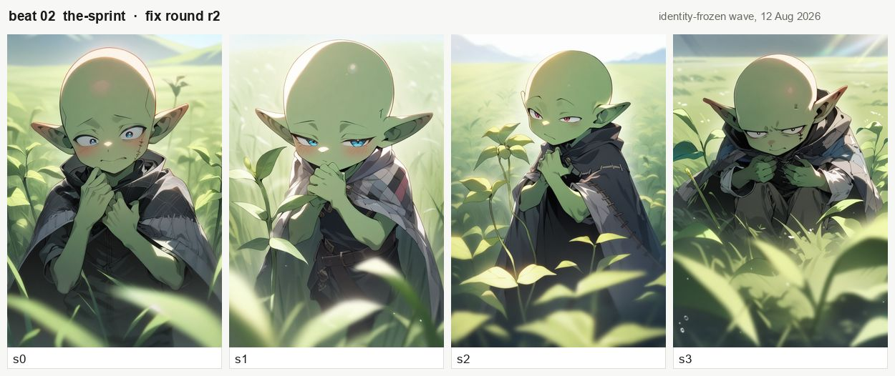
no scars, no stitched skin to the negative and moved the sapling stem into the first clauseObserved, comparing the two The named fault cleared: every crown in the fix generation is unbroken green — no graft, no suture, no seam — where the first generation sewed all four, and the cloak keeps its patchwork, so naming skin did not negate what the positive asserts. The second fault moved but did not clear: a distinct sapling stem stands between him and the camera in two of the four (s1, s2) where the first generation had none in any.
animagine-xl-3.1 · 832×1216 · 40 steps · guidance 7.5 · seeds 20260721 / 20261721 / 20262721 / 20263721 · $0.00 · frames in farm-out/ep2-b02-idfix/ and farm-out/ep2-b02-idfix-r2/, full prompt in the .yaml beside each PNG
What the shot should show Him crouched behind a stem that hides about a sixth of him — the joke is the size mismatch, so we need both him and how little tree there is.
The fixer's diagnosis, committed last night “s3 draws the whole skull dome cream-white above a green face … This is HIS NAMED BEAT-03 FAULT — ‘making the goblin compeltely white’ — returning in a localised form … The ban reached the model and did not bind, because the model keeps the FACE green and pales only the CRANIUM.”
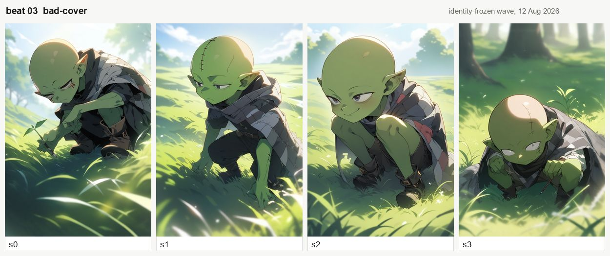
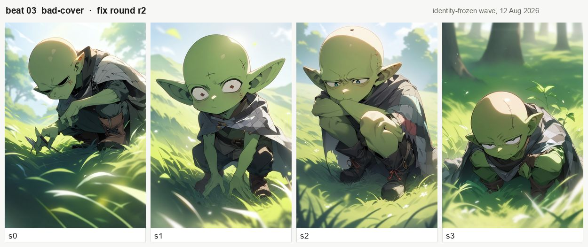
his bare scalp green, and sent no skin ban at allObserved, comparing the two Read across all four frames the named fault did not clear: s0, s2 and s3 still put a cream dome over a green face, and only s1's skull is green throughout. What did change is the stitching — s1's suture line is gone — and s1's eyes come back blank white with square red pupils. Worth flagging because the wave-level conclusion in the ledger (“the affirmative holds the colour”) was drawn from two of these four frames, not four.
animagine-xl-3.1 · 832×1216 · 40 steps · guidance 7.5 · $0.00 · the fix frames were published into farm-out/ep2-b03-idfix/ on the results branch — the baseline directory — so the first-generation sheet above is built from the copy that survives on main. See the last record in wave2-faults-fixer.yaml; this is a merge hazard, not a rendering one.
What the shot should show Close on his face holding his breath — cheeks puffed, eyes darting, ears twitching at every sound.
The fixer's diagnosis, committed last night “This beat is a CLOSE-UP, so the fault that reads as a small patch elsewhere fills the frame here … At close-up size he reads as a sewn doll rather than a goblin.” The named fix was the beat-02 ban propagated verbatim, with nothing else changed.
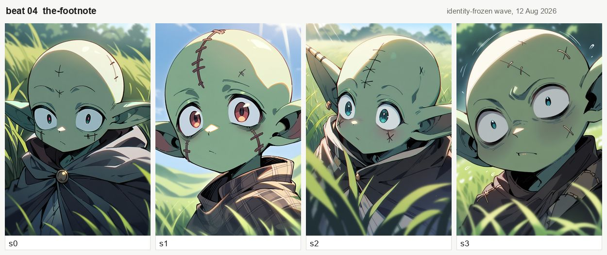
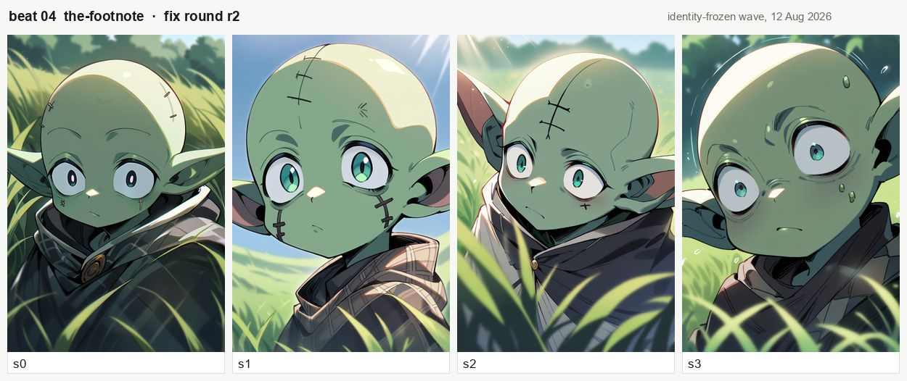
no scars, no stitched skin, staging untouchedObserved, comparing the two Half of the named fault cleared and half did not: the crown stitching drops from heavy sutures in all four to two faint marks in s0, a shortened seam in s1, X marks in s2 and nothing in s3 — while the cream dome over the upper skull is present in all four and unchanged from the first generation. The ban was confirmed sent in the frame sidecars, so this is the lever falling short, not a delivery failure.
animagine-xl-3.1 · 832×1216 · 40 steps · guidance 7.5 · $0.00 · frames in farm-out/ep2-b04-idfix/ and farm-out/ep2-b04-idfix-r2/
What the shot should show Two guards jog into an empty morning field and stop to scan it — round harmless shapes, one carrying a clipboard made of bark.
The fixer's diagnosis, committed last night “NO ARMOR in any frame, 4/4 — the thing he rejected outright is gone.” But: “s0 and s2 are extreme bird's-eye looking down on their scalps; s3 is an over-the-shoulder from behind … the overhead prior is what ‘two boys in a field’ gives this checkpoint when no camera height is stated.”
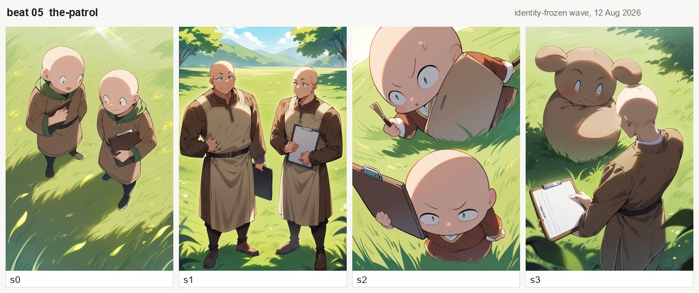
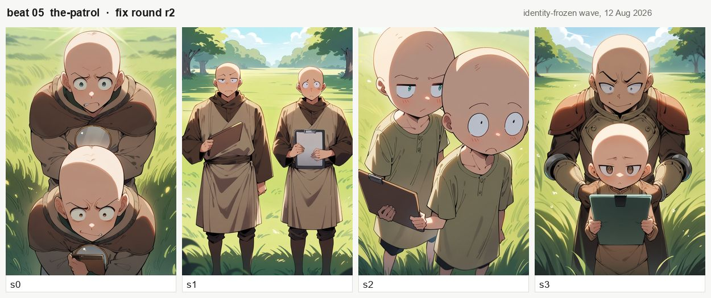
no high angle, no from above plus eye-level, paid for out of the winter tier; the armor ban was left untouchedObserved, comparing the two The named fault mostly cleared — three of the four now look at the guards from eye level (only s0 still shoots down at their scalps), and the animal-eared non-person that stood in for the second guard in s3 is gone. Against that, s3's rear guard now arrives in a riveted breastplate with pauldrons and metal bracers, even though the armor ban was carried into this round unchanged and the first generation had no armor in any frame.
animagine-xl-3.1 · 832×1216 · 40 steps · guidance 7.5 · $0.00 · frames in farm-out/ep2-b05-idfix/ and farm-out/ep2-b05-idfix-r2/
What the shot should show Guard 2 turns the bark clipboard over and reads off it — the clipboard is the joke, so the camera is on the board.
The fixer's diagnosis, committed last night “Windows and interior walls in every frame … THE CAUSE IS AN OMISSION AND IT IS VISIBLE IN THE PROMPT: this beat's sentence names NO SETTING at all, and this beat's negative carries NO walls ban — nohouse, nointerior, noindoors.”
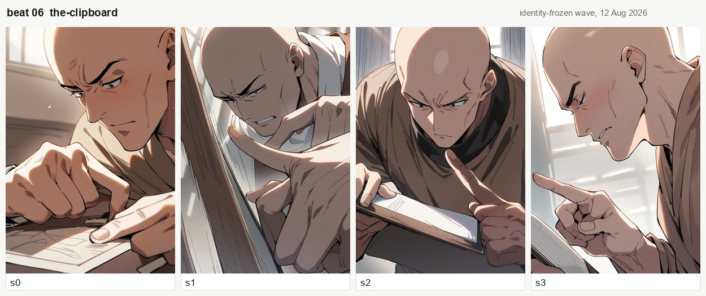
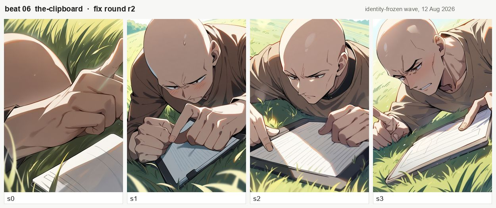
in a sunny grassy field moved into the first clause, plus the walls ban this beat never hadObserved, comparing the two The named fault cleared completely: all four fix frames are outdoors in a sunlit green field, and the windows and interior walls that filled every first-generation frame are gone — the sepia palette went with them, which was the prediction's own test of whether the colour was a symptom or a second fault. The guard is the same hard, scowling adult man in both generations; that was recorded and deliberately not attempted here.
animagine-xl-3.1 · 832×1216 · 40 steps · guidance 7.5 · $0.00 · frames in farm-out/ep2-b06-idfix/ and farm-out/ep2-b06-idfix-r2/
What the shot should show Guard 1 points at the scavenger, decisive, having arrived at completely the wrong conclusion.
The fixer's diagnosis, committed last night
“The positive asks for ‘his partner's shoulder just visible at frame edge’. The negative sends people in background. The ban negates the thing the prompt asserts, so no frame has a partner and no frame ever could. This is a RECIPE BUG, not a model failure.”
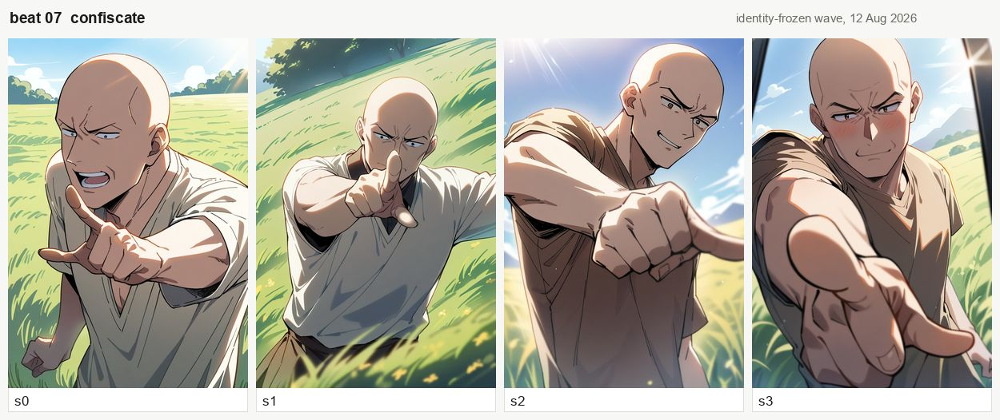
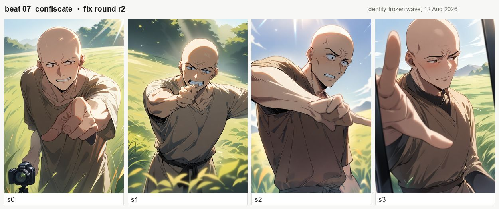
pointing away off-frame to his left added, and no white shirt paid for out of itObserved, comparing the two One of the three named faults cleared: the tunic reads brown in all four fix frames where the first generation had off-white in s0 and s1. The pointing arm still comes down the lens in three of four — only s2 points away across frame — and retiring the ban did not bring the partner: no second figure appears in any frame, which says the ban was not the only thing suppressing him. s0 also draws a black camera body at the lower left.
animagine-xl-3.1 · 832×1216 · 40 steps · guidance 7.5 · $0.00 · frames in farm-out/ep2-b07-idfix/ and farm-out/ep2-b07-idfix-r2/
What the shot should show Guard 2 lowers the clipboard and points at the scavenger's belly — the camera follows the finger to where the apple actually went.
The fixer's diagnosis, committed last night
“s1 draws the goblin as a giant green sphere with a face on it … This is the worst single frame in the wave.” And the finding underneath it: “BEAT 08 IS THE ONLY BEAT WHOSE GOBLIN DEFINITION OMITS patchwork cloak … IT IS ALSO THE ONLY GOBLIN BEAT IN THE WAVE WHOSE SKULLS ARE CLEAN.”
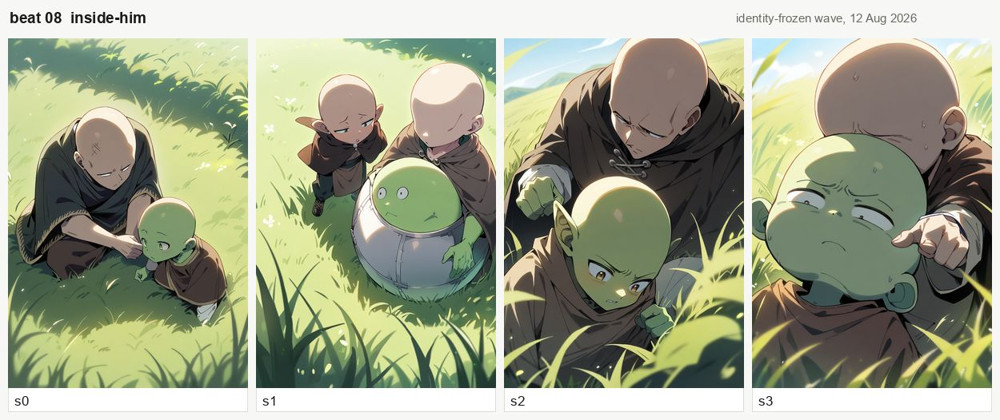
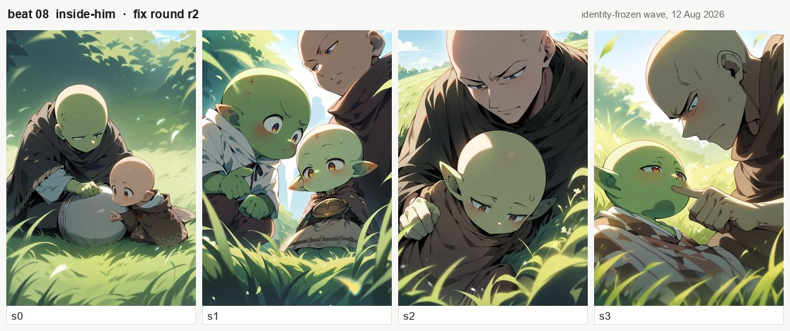
no high angle, no from above and an eye-level two-shot, on the tightest token budget in the waveObserved, comparing the two The named fault half cleared: three of the four now read at eye level, and the green egg-with-a-face is gone — but s0 still puts a large featureless pale sphere in the grass between the two figures, so an eye-level camera did not by itself stop the beat producing a sphere. s1 now draws two goblins where the beat has one, and nobody points at a belly in any frame, which was recorded and left unfixed by choice.
animagine-xl-3.1 · 832×1216 · 40 steps · guidance 7.5 · $0.00 · frames in farm-out/ep2-b08-idfix/ and farm-out/ep2-b08-idfix-r2/
What the shot should show Close on Guard 1's face working slowly through what that means, in daylight.
The fixer's diagnosis, committed last night “s1 is THREE bald heads in the grass with no bodies at all …roundsits directly againstbald, and this checkpoint applies the word next tobald headTO THE SKULL … His word is kept, its target is corrected.”
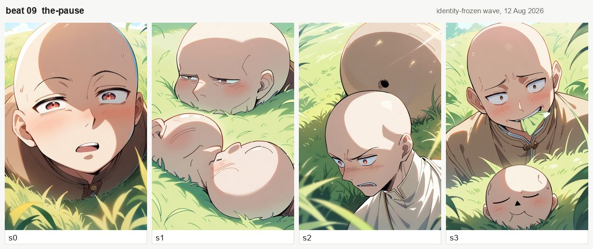
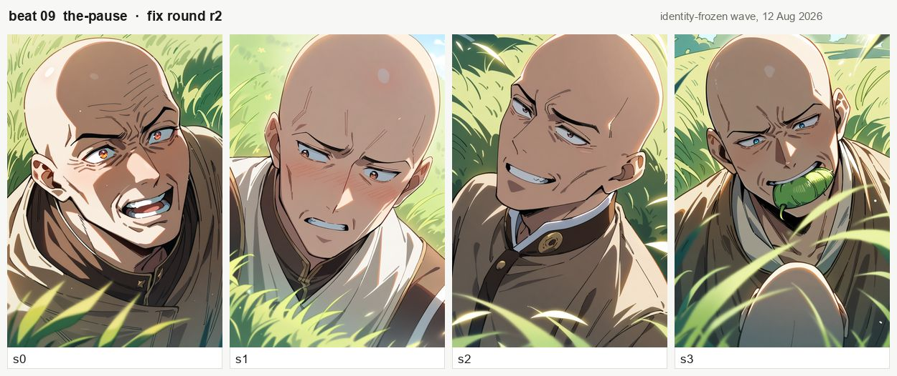
round moved off the skull onto the body, plus no extra heads, no disembodied headObserved, comparing the two The named fault cleared: no disembodied heads in any of the four fix frames — the three severed heads of s1 and the loose head under the guard in s3 are both gone — and the skulls read as a man's rather than the distended balloon the first generation drew in all four. s3 has him biting a green gourd, which is new and is nobody's stated fault.
animagine-xl-3.1 · 832×1216 · 40 steps · guidance 7.5 · $0.00 · frames in farm-out/ep2-b09-idfix/ and farm-out/ep2-b09-idfix-r2/
What the shot should show Guard 2 flips the clipboard around to show the back of it, and the back is blank.
The fixer's diagnosis, committed last night “s0 is a SHIRTLESS bodybuilder — bare chest, no tunic at all … s1 has one man plus a giant disembodied bald head floating where the second body belongs. s2 has one man and puts the second as a DRAWING OF A BALD MAN on the clipboard face.”
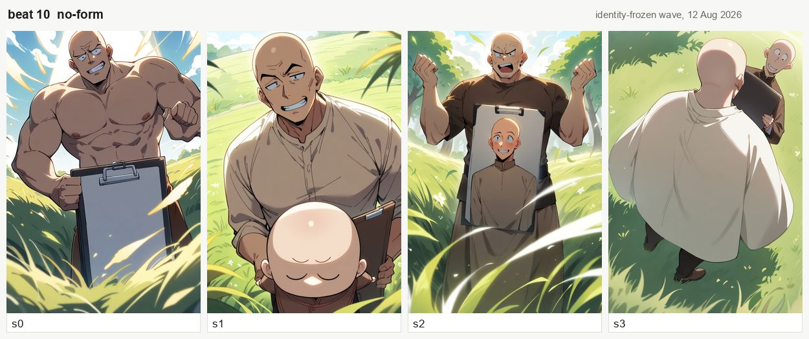
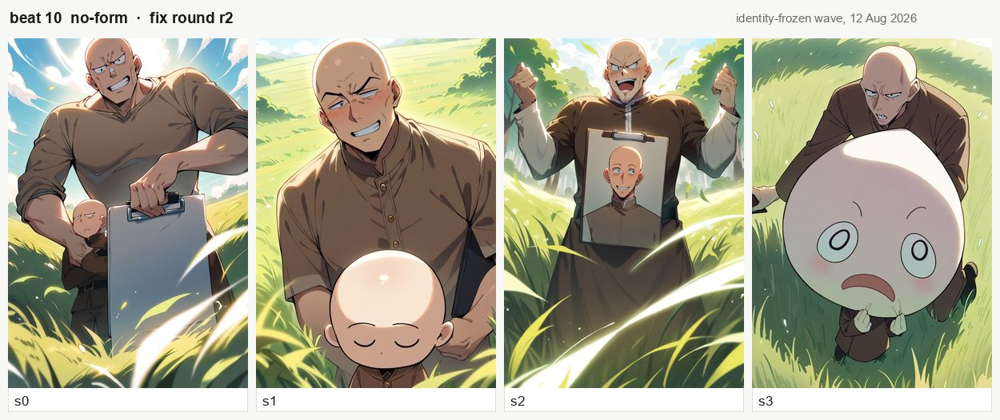
round de-duplicated off the skull onto the body, plus no bare chest, no muscular; getting two guards drawn as two people was left alone on purposeObserved, comparing the two The costume fault cleared — every figure is clothed and the tunic reads brown in all four, where the first generation had a bare chest in s0 and cream, dark brown and white elsewhere. The second guard is still not a person in three of four: s1 keeps the floating bald head at his belly, s2 keeps the drawing on the clipboard face, and s3 replaces the far guard with a giant pale sphere wearing a face. Only s0 shows two actual men.
animagine-xl-3.1 · 832×1216 · 40 steps · guidance 7.5 · $0.00 · frames in farm-out/ep2-b10-idfix/ and farm-out/ep2-b10-idfix-r2/
What the shot should show The two guards walk away arguing, backs to camera, still genuinely trying to do their jobs.
The fixer's diagnosis, committed last night
“THE BEST BEAT IN THE WAVE AND IT GETS NO r2 … Firing an r2 here would be manufacturing work on the wave's healthiest beat while beats 09 and 10 are drawing severed heads.” Also: the same round bald wording that broke beats 09 and 10 is in this beat's positive, and this beat's heads are fine — the difference is shot size.
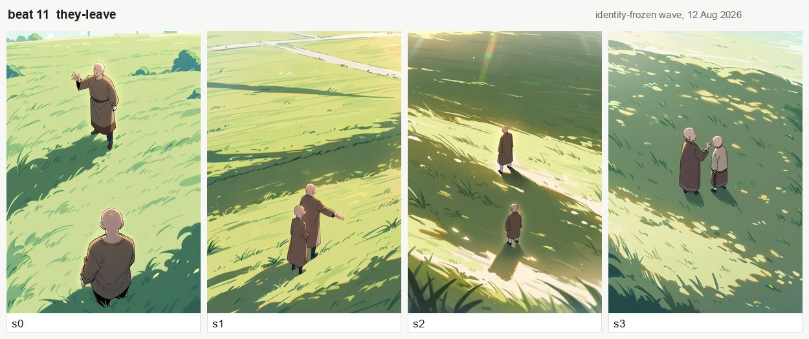
No r2 — clean first generation. Nothing was named faulty on this beat, so no fix round was rendered and there is no second sheet to put here. That is a decision, not a gap: the GPU time went to beats 09 and 10 instead.
Observed
All four frames hold two bald men in brown in an empty sunlit field with long morning shadows, and the leaving action lands in two of them — s1 and s2 walk away from camera as written, while s0 turns the far man back toward the lens and s3 has them facing each other. This is also the wave's control on the round bald adjacency: the same wording, a wide shot, and no swollen or loose heads anywhere.
animagine-xl-3.1 · 832×1216 · 40 steps · guidance 7.5 · $0.00 · frames in farm-out/ep2-b11-idfix/
What the shot should show The scavenger slides down and folds into the sapling's very small patch of shade, knees up around his ears.
The fixer's diagnosis, committed last night “s1 is the worst in the wave for this — nearly the whole skull is cream-white above a green face … Same fault the beat-02 r2 already cleared with the skin ban.” The fix was that ban propagated verbatim, with the positive left byte-identical.
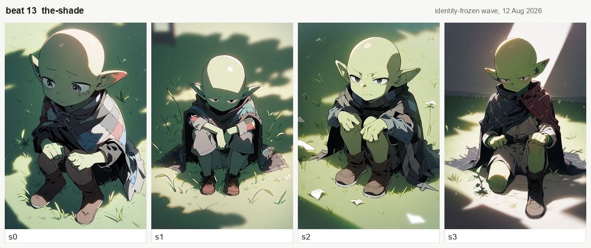
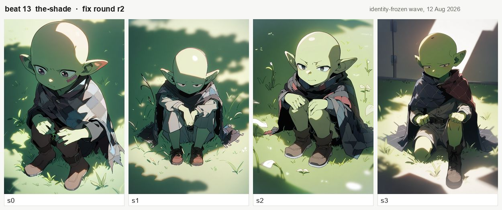
no scars, no stitched skin only, costing exactly the four spare tokens; positive untouchedObserved, comparing the two The named fault did not clear: the crown carries the same pale dome in s0, s1 and s2 in both generations, and s3 is green in both — the two rounds are near-indistinguishable at the scalp. Neither generation has a suture or a graft anywhere, so on this beat the ban had nothing of its own to remove, which is consistent with the pale dome being a separate fault from the stitching rather than the same one. The murky light is unchanged too, as predicted.
animagine-xl-3.1 · 832×1216 · 40 steps · guidance 7.5 · $0.00 · frames in farm-out/ep2-b13-idfix/ and farm-out/ep2-b13-idfix-r2/
What the shot should show His hands picking at the dirt, embarrassed, glancing around — the excuse lives in the hands, not the face.
The fixer's diagnosis, committed last night “s2 is the clearest case in the whole wave: a distinct BROWN OVAL GRAFT on the crown plus X-stitches across the skull … The clawed fingers, the embarrassed face and the light are all right; the head is a sewn doll's.”
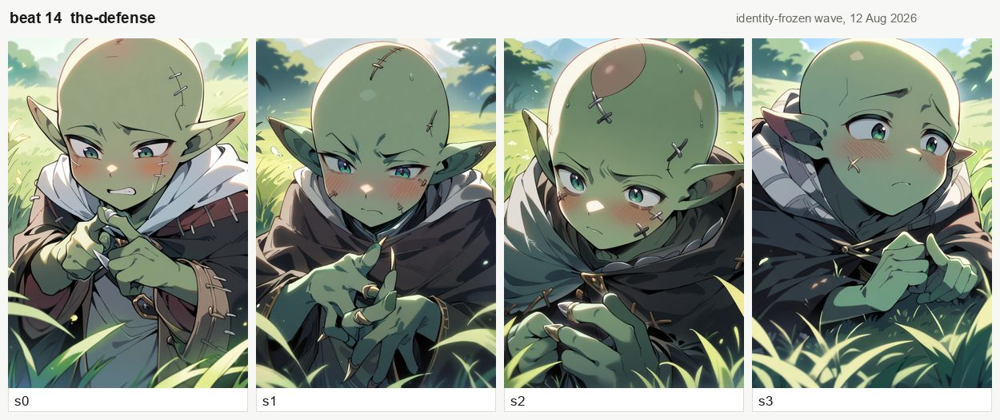
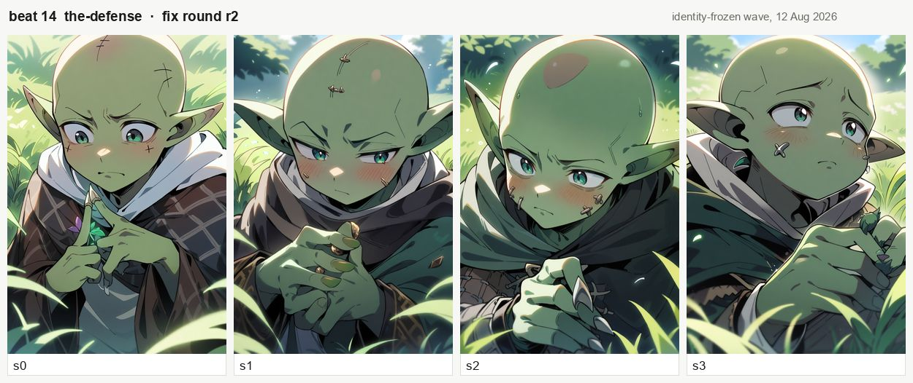
Observed, comparing the two The named fault did not clear: the brown oval graft is still on s2's crown with X-stitches beside it, s0 keeps its crown stitch and its cheek marks, and s1 keeps two marks on the skull — the marks are fewer and finer than the first generation, but present in three of the four. The crown's colour was green in both rounds here, so this beat isolates the stitching from the pallor, and the ban only dented it.
animagine-xl-3.1 · 832×1216 · 40 steps · guidance 7.5 · $0.00 · frames in farm-out/ep2-b14-idfix/ and farm-out/ep2-b14-idfix-r2/